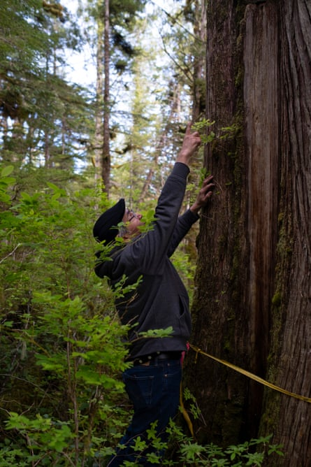
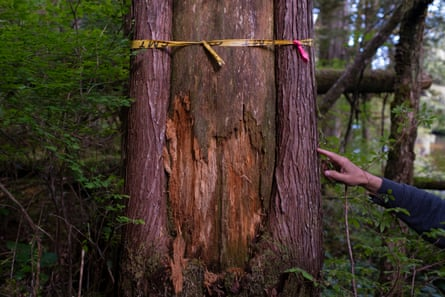
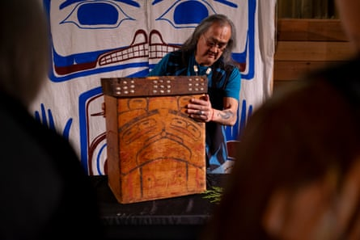

When the plane took off from Vancouver’s airport, bound north for the Great Bear Rainforest, Q̓íx̌itasu Elroy White felt giddy with excitement.
The plane traced a route along the Pacific Ocean and British Columbia’s coast mountains, still snow-capped in late May.
Inside the cramped plane, White, who serves as an elected councillor and hereditary chief for the Heiltsuk nation , glanced often at the seat next to him and thought about his mission: bringing his travelling companion home for the first time in nearly 150 years.
Hidden underneath a large grey flight bag and packaged carefully was an ancient cedar bentwood box .
“I felt like royalty, traveling with the box,” said White, who is trained as an archaeologist. “And as I sat on the plane, it really hit me what I was doing on behalf of the nation: I was bringing home a belonging – not an object.”
When he landed, a group of artists were waiting, eager to view first-hand an object they had only seen in books, online and – if they travelled far enough – in a museum or gallery.
In late May, the prized box was honoured by the Heiltsuk in their big house during ceremonies to ratify their nation’s new constitution . But the unlikely return of the box underscores the challenges facing Indigenous communities in a protracted battle to reclaim items pillaged from their lands and now displayed in museums and private collections.
Q̓íx̌itasu Elroy White points to a ‘culturally modified tree’, which showcases how previous generations used took cedar bark from living trees.Photograph: Leyland Cecco/The Guardian
Bentwood boxes are crafted from a single piece of cedar wood that has been curved on three sides through steam and fastened shut on the fourth with wooden pegs. Perfected by coastal Indigenous communities over centuries, the boxes were both ceremonial and practical. The watertight containers were often used to store food and valuable goods and were invaluable on canoe voyages across sections of the Pacific.
But before taking on its distinctive shape, each box begins as a strip of western red cedar wood, carefully removed from the trunk of a living giant in the woods. The technique, known as bark stripping, often leaves a large rectangular bark-strip scar visible centuries later. The oldest living culturally modified tree ever discovered in the province dates back to 1186 CE .
“Our ancestors removed planks and then gave thanks to the tree,” said White. “They took nothing more than was needed.”
The box that White had tenderly returned home was among the many that had taken unlikely journeys to lands that did not have the revered trees.
Beginning in the late 1800s, federal “Indian agents” and missionaries plundered coastal communities, often under the guise of conservation. The removal of items with deep cultural value coincided with Canada’s ban on the potlatch , a gift-giving ceremony that had long underpinned relations between clans and neighbouring nations.
Many of the items were sold under duress. Mortuary poles, masks and bentwood boxes were scattered all over the world, eagerly snapped up by museums and private collectors. Occasionally, a piece would surface at auction.
In 2020, while searching for a piece of jewellery, Janet and Dave Deisley, a couple based in Salt Lake City, Utah, spotted a bentwood box for auction in Vancouver.
The pair had spent years in Alaska, South America and British Columbia, purchasing contemporary pieces from Indigenous artists. They developed a particular love for Inuit stone carvings and prints, as well as Coast Salish masks.
“I was always interested in bentwood boxes, but never had bought one,” said Dave.
The box was unique: its heavy lid was inlaid with shimmering snail shells. All the auction house could say was that the box was from the 1880s and designed by an artist from the Heiltsuk nation – a people renowned for their craftsmanship.
And so the couple bought the box. But back home in Salt Lake City, the excitement around it soon faded.
“It just had this incredible beauty, but never really seemed to fit anywhere in our house. It never felt right and I couldn’t figure out why,” Janet said. “I felt bad for it. It was just sitting there on its own in this, you know, sort of formal living room in the desert.”
Through personal contacts, the couple set out to do what they believed was right: return the box. But what seemed like a simple idea contained a multitude of logistical hurdles.
“There isn’t just a number you call and it’s not something that can be done in a week,” Janet said. “The chief said if we could get it to Vancouver, to the Coastal First Nations office, they would find a way to get it up to the community in a respectful manner.”
For more than a year it sat in the office in downtown Vancouver until the Heiltsuk community worked out a plan that involved White escorting it back to the town of Bella Bella.
“The existential question is: what’s a historic red cedar box, that came to life in the BC coastal community over 100 years ago, doing in a modern house in the Utah desert?” saids Janet. “There was really no satisfactory answer for that. There was never any thought that it should end up in a museum. It had to go home.”
Q̓íx̌itasu Elroy White points to a ‘cultrually modified tree’, which showcases how previous generations used took cedar planks from living trees.Photograph: Leyland Cecco/The Guardian
The returned box represents a broader effort by the Heiltsuk nation to repatriate more than 1,000 items at more than three dozen institutions around the world – and countless private collections.
Over the past decade, the nation has developed a digital database to accompany an extensive list of objects and ancestral remains, first developed in the 1980s.
White said he has noticed a dramatic shift in how museums handle repatriation efforts, with many eager to begin discussions over the lengthy and challenging process of returning items. First Nations communities often bear the financial burden of repatriation and a new report estimates it would cost nearly C$663m (£353m) over five years to the fund repatriation for all 204 First Nations in British Columbia.
The community has successfully repatriated four items since 2022, including a chief’s seat carved by the acclaimed Heiltsuk artist and chief Captain Richard Carpenter (Dúqvay̓ḷá Hawallis). The ornate seat, once behind glass in the Royal British Columbia Museum, now sits in the community’s big house.
“Smoke, ashes and dust are going to land on the seat because it is no longer a museum piece. It was never meant to be,” said White. “And the box is now in the chief’s room as a reminder to us of a path that was long ago when these boxes were so plentiful.”
But private collections represent a “vast unknown” with little indication of how many items remain in homes.“There’s a despair knowing that items created in the territory for the chiefs and their families are now owned by somebody they were never intended for,” he said.
Numerous items from that era – including a similar bentwood box – remain up for sale on auction sites.
White said the “no-strings attached” gesture by Janet and Dave Deisley has inspired others to reach out to return items, including a pair of ornate paddles gifted to a missionary family in the late 1800s.
Heiltsuk artist Maxwell Johnson displays the bentwood box for the community.Photograph: Leyland Cecco/The Guardian
“More items will eventually come, but the Heiltsuk nation isn’t rushing anything, because we don’t have a museum and our culture centre is full,” said White, reflecting a broader concern of communities repatriating items.
“We need our own museum, but it can’t be a museum like where these belongings came from. It has to be designed in a way that benefits our people first – not for outside tourists or researchers – Heiltsuk first,” he said.
“Our people were still going out and practising their food and cedar bark gathering, carrying out potlatches in their own villages,” White said. “And this box represents that moment in time before the potlatch ban.”
For nearly 150 years, any Heiltsuk artist wanting to experience the art and craftsmanship of their ancestors needed to travel outside the community.
“To realise that the descendants of these artists have never seen the pieces created by their ancestors – this is wrong,” said Janet. “It’s fair to say we would never purchase another historic piece like this again.”
The Heiltsuk nation gave Janet and Dave a modern bentwood box as a thank-you gift.
“The young local artist knew immediately which one he wanted to give them,” said White. “For years, his work has been inspired by Heiltsuk boxes that were in museums. But now there’s one here for him to learn from.”
At the end of May, after the box had been welcomed in dance, song and feasting, prominent artists gathered with community members to study it, assessing the subtle differences in style between coastal nations.
Outside, rain poured down on to the forest and the mammoth cedar trees that have sustained the Heiltsuk for generations.
“There is probably still is a tree out there, standing in our forest, that has half its wood removed so that an artist could make this box,” said White. “And so in more than one way, after such a long journey, it has returned home.”